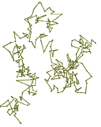

What is diffusion? |
Diffusion can be a confusing topic, beginning with what is meant by the word. Difffusion can be viewed from two different perspective: the macroscopic, meaning visible to the naked ey, and the microscopic or molecular. Even at the macroscopic level, there is confusion. Diffusion is often used to mean the net movement of materials or energy from an area of high concentration to areas of lower concentration. Diffusion macroscopic level means nd the microscopic. are liquid because the molecules are freer to move with respect to their neighbors, but they still interact with one another. As the temperature rises, the average speed at which the molecules are moving increases. When a molecule's energy is sufficient break the interactions with its neighbors, it can escape from liquid phase - it is transformed into a gas. In a gas, there are essentially no interaction between molecules. genetic drift Under what conditions is there difffusion in solids? What is a random walk what is molecular motion random how random - does that mean we cannot say anything about molecular movement?
|
| An atomic view: Liquids are liquid
because the molecules are freer to move with respect to their neighbors,
but they still interact with one another.
As the temperature rises, the average speed at which the molecules are moving increases. When a molecule's energy is sufficient break the interactions with its neighbors, it can escape from liquid phase - it is transformed into a gas. In a gas, there are essentially no interaction between molecules. |
|  | Within a cell, the bulk of the molecular movement is driven by diffusion. Diffusion is the movement of molecules or particles as a result of random collisions with neighboring molecules. We can see the effects of these collisions in a visible phenomena known Brownian motion. In 1827, the English botanist Robert Brown watched the jerky motion of pollen grains in water -- they moved in a distinctive pattern known as a random walk. |
What drives these movements? In 1905, Albert Einstein published a paper that explained these motions in terms of molecular collisions between the visible particles with the invisible solvent molecules. Because of this constant and random bombardment, sometimes a particle is pushed one way, sometimes another. Smaller particles move more than larger ones and motions increase with increasing temperature. |
|
|
Use Wikipedia |
revised
27-Jun-2007 |